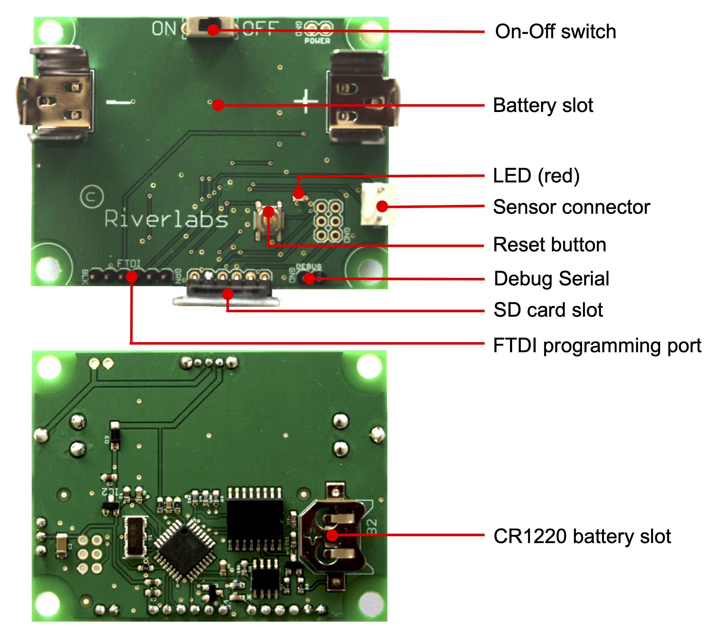

Techspec
Registrador Wari¶
Resumen¶
El modelo Wari esta basado en un sensor de distancia ultrasonico, el Maxboxis MB7389. Sensores ultrasónicos tiene un rango limitado (5m en el caso del MB7389), y por eso son aptos solo para ríos pequeños y reservorios. El modelo Wari no dispone de funcionalidad de telemetría, pero graba las mediciones un una tarjeta SB. El diseño tecnico esta optimizado para consumo de energía ultra bajo, y tiene una vida de batería de mas de 5 años durante uso típico.
El modelo Wari tiene la siguientes características:
Especificaciones técnicas¶
| Rango | 300 mm - 5000 mm | | Resolución (nivel de agua) | 1 mm | | Resolución (temperatura) | 0.25°C | | Resolución (voltage) | 0.01 V | | Precisión (nivel de agua) | ~ 5 mm | | Fuente de poder | 1 x 3.6 V Batería Li-ion (18650) | | Resistencia al agua | IP67 |
Layout del PCB¶

Sensor y conexión al sensor: el sensor puede ser desconectado del registrador si es necesario. Cuando los reconecte, compruebe que el sensor es conectado correctamente. En el tablero verde principal, el cable proveniente del pin vecino a la X en MAXBOTIX (pin más alejado de la batería) debe estar hacia el extremo externo del terminal conector. El sensor genera “clicks” apenas perceptibles cuando está midiendo (10 clicks un período de medición en torno a 1.5s).
Reset: el botón de reseteo puede ser oprimido en cualquier momento. El registrador simplemente recomenzará y continuará a funcionar como antes. Oprimir el botón de reseteo también traspasa los contenidos de la memoria interna a la tarjeta SD.
Tarjeta SD: para remover la tarjeta SD, simplemente tire de ella hacia afuera. Para insertarla, empuje la tarjeta cuidadosamente en la ranura hasta que esté completamente insertada. Verifique que esté correctamente insertada, con los contactos orientados hacia afuera y el tablero pequeño de color azul. Notar que el sensor almacena las mediciones en una memoria interna, y sólo traspasa a la tarjeta SD cada 24h (seteo estándar). La memoria interna puede ser traspasado a la tarjeta SD en cualquier momento oprimiendo el botón "Reset". No extraiga la tarjeta SD mientras se esté traspasando los datos de la memoria (lo cual se indica con el LED rojo iluminándose) pues esto puede corromper la tarjeta.
LED rojo: este LED se ilumina brevemente cuando el sensor toma una medición. El LED también se ilumina cuando la memoria interna es traspasada a la tarjeta SD. Esto puede tomar varios segundos. Notar que la luz LED puede ser difícil de ver a luz de día.
Numero de serie: reporte el número de serie cuando nos contacte por cualquier problema.
WMOnode¶
Resumen¶
El WMOnode ha sido desarrollado con apoy de un proyecto Innovation Hub del OMM. Usa un sensor Lidar tipo Lidarlite v3HP con un rango de 35m, y tiene espacio para un modulo de telemetria (forma XBee). Tipicamente se combina con un DIGI 3G Cellular modem para transmitir datos de manera inalambrica, pero tambien se puede usar otros modulos (ej. Zigbee)
Especificaciones técnicas¶
| Rango | 0.05 m - 35 m | | Resolución (nivel de agua) | 1 cm | | Resolución (temperatura) | 0.25°C | | Resolución (voltaje) | 0.01 V | | Precisión (nivel de agua) | ~ 5 - 10 cm | | Fuente de energía | 1 x 3.6 V Batería Li-ion (18650) | | Resistencia al agua | IP67 |